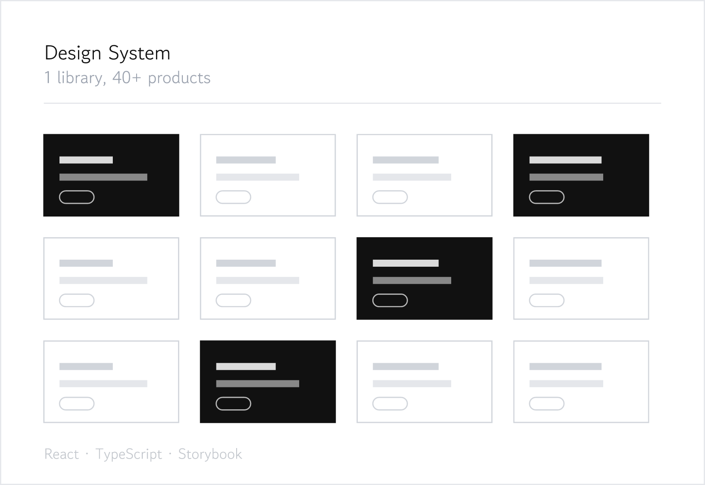
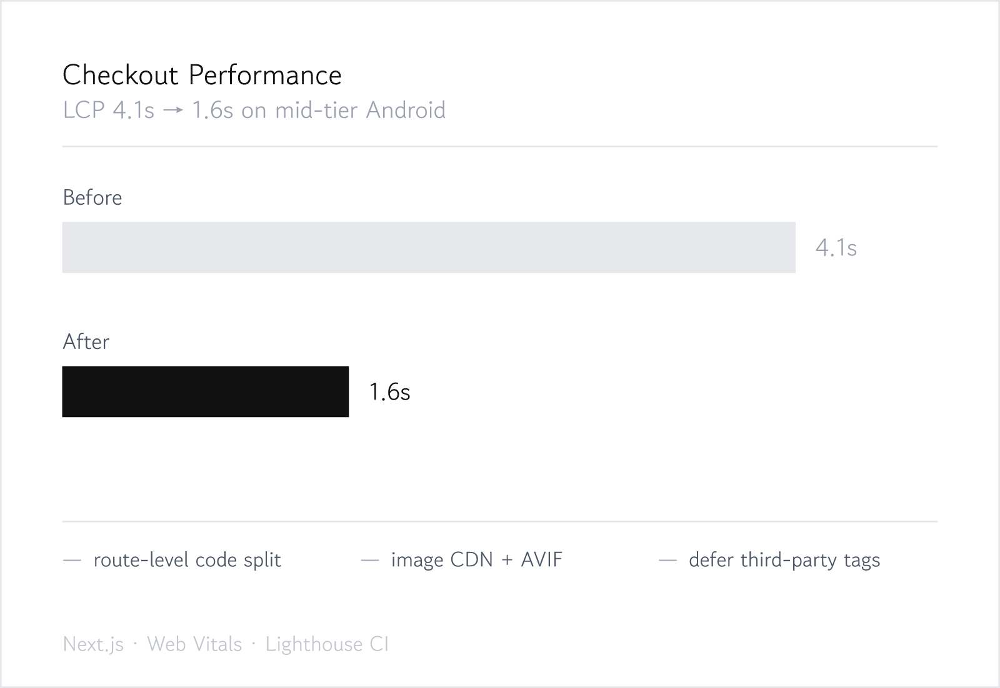
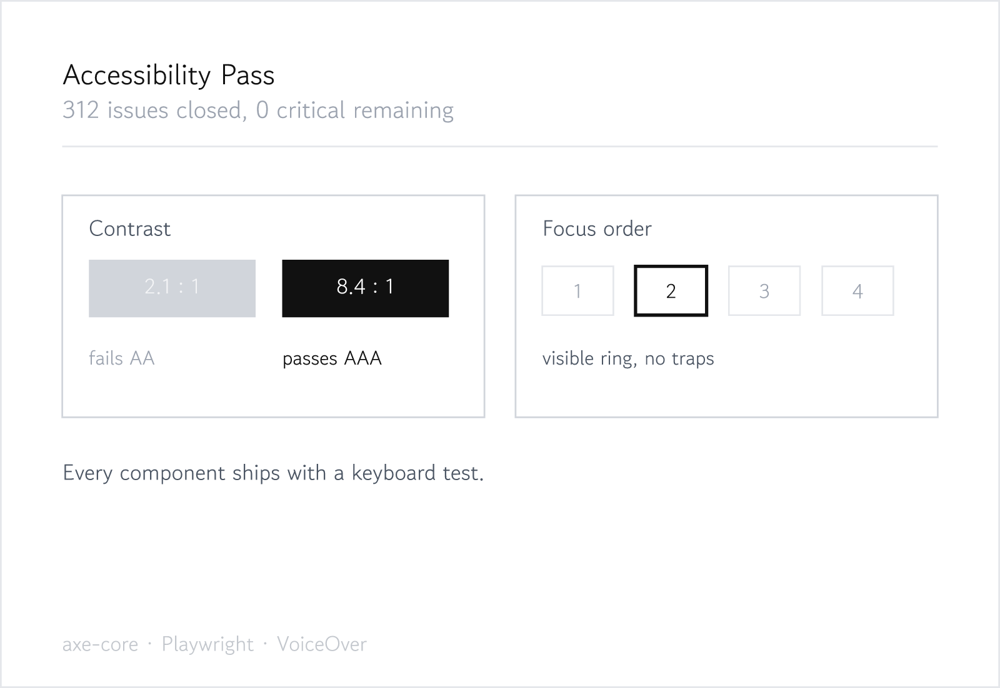
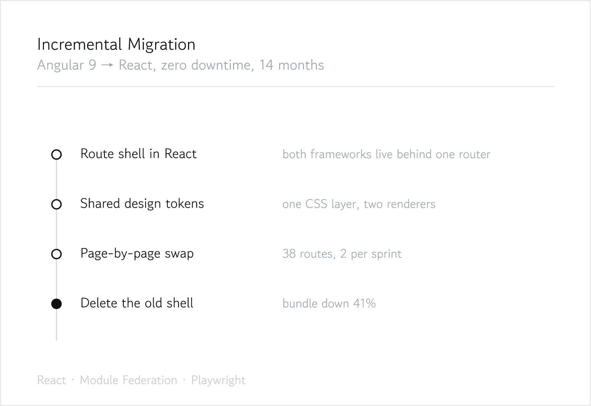

I have spent five years on the same problem in different shapes: how does an interface stay coherent when twenty people are changing it at once.
That led me to design systems, then to performance, then to accessibility — which turned out to be the same discipline viewed from three angles. Write the constraint down once, make it cheap to follow, and the codebase holds its shape.
Before engineering I studied industrial design, which is why I still draw a thing before I build it. Outside work I climb badly and read about typography.

Design System React · TypeScript · Storybook One library adopted by 40+ products ↗ 링크
Checkout Performance Next.js · Web Vitals · Lighthouse CI LCP 4.1s → 1.6s on mid-tier Android ↗ 링크
Accessibility Pass axe-core · Playwright · VoiceOver 312 issues closed, 0 critical remaining ↗ 링크
Incremental Migration React · Module Federation · Playwright Angular 9 → React, zero downtime, 14 months ↗ 링크The problem — six teams had six button components. None of them agreed on focus states, and two were inaccessible.
What I did — built a single library with tokens for colour, spacing and motion, then wrote a codemod so teams could migrate a screen in an afternoon rather than a sprint.
The number that mattered — adoption. 40+ products on the library within a year, because migrating was cheaper than not migrating. That was the design goal, not the component API.
The problem — checkout felt fine on our laptops and was unusable on the devices most of our customers actually had.
What I did — measured on a real mid-tier Android instead of a throttled desktop, then went after the three biggest costs: route-level code splitting, an image CDN with AVIF, and deferring third-party tags that nobody owned.
The number that mattered — 4.1s to 1.6s LCP, and a Lighthouse CI budget in the pipeline so it stays there. Conversion moved too, but the budget is what keeps it honest.
The problem — an audit came back with 312 findings and the team had no idea where to start.
What I did — sorted by "how many screens does this touch", fixed the shared components first, and added axe-core to the component test suite so the same class of bug could not come back.
The number that mattered — not 312 closed, but zero critical issues twelve months later. The suite catches them before review now.
The problem — a rewrite had been proposed twice and rejected twice, correctly. The application could not stop shipping for a year.
What I did — put a React shell around the existing router so both frameworks could run behind one URL space, shared the design tokens as a plain CSS layer, then moved two routes per sprint.
The number that mattered — zero downtime across 38 routes, and a 41% smaller bundle once the old shell came out. Slower than a rewrite on paper. Finished, which the rewrites never were.